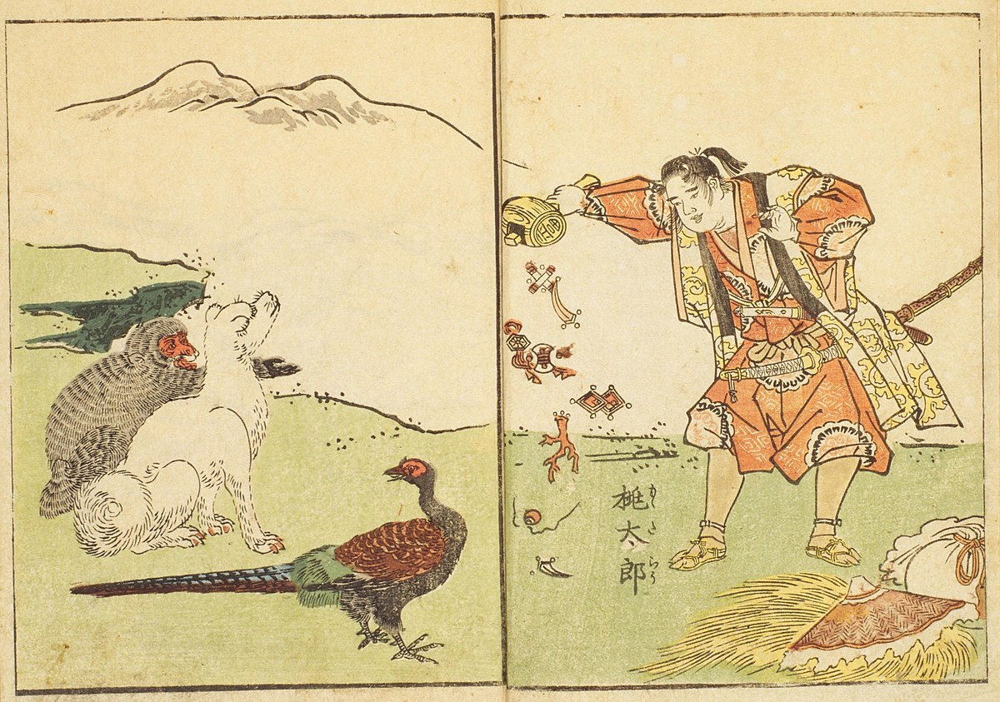
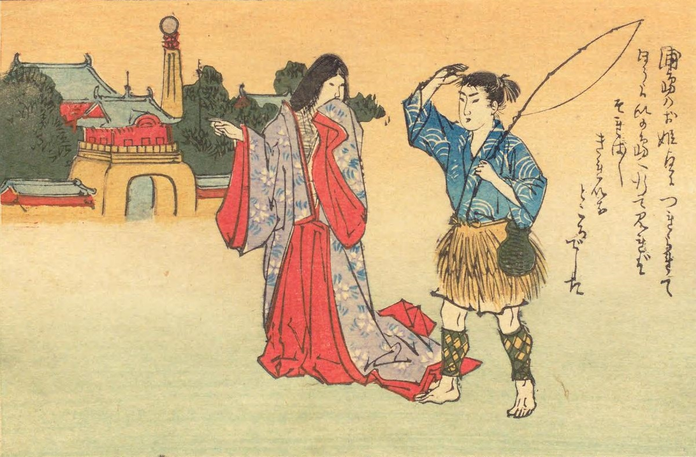
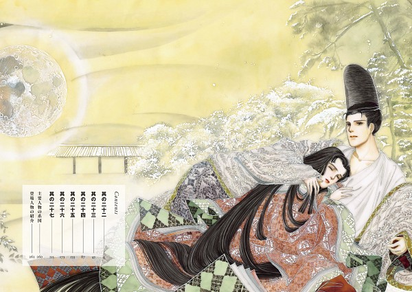
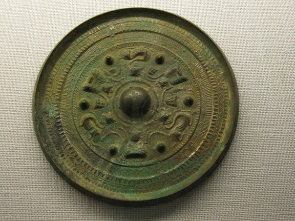
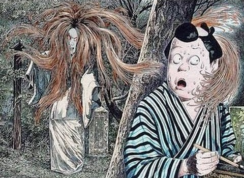

Momo-tarō
Brzoskwinie kojarzą się z latem nie tylko nam. Również w Japonii to jeden z symboli tej pory roku. Warto przy okazji przypomnieć sobie legendę o Brzoskwiniowym Chłopcu, czyli Momo-tarō.
Momo-tarō był odpowiedzią na modlitwy pewnej bezdzietnej pary. Jednego dnia żona, która prała w górskim strumieniu ubrania, zauważyła ogromną brzoskwinię płynącą z prądem. Zabrała ją do domu i gdy, razem z mężem, rozłupała wielki owoc, wewnątrz, zamiast pestki, znalazła ślicznego chłopczyka. Chłopiec natychmiast wyjaśnił zdumionej parze, że zesłali go bogowie, aby został synem tej pary. Nie wiemy nic o dzieciństwie Momo-tarō. Za to gdy dorósł, wyruszył walczyć z ogrami (oni), które terroryzowały okolicę i uprzykrzały życie mieszkańcom, jak to tylko oni potrafią. Na drogę dostał od mamy zapas ciastek z prosa i ruszył na poszukiwanie gniazda demonów, które znajdowało się na Wyspie Ogrów. Po drodze spotkał małpę, bażanta i psa. Podzielił się ze swoimi nowymi znajomymi ciastkami, a ci – w ramach wdzięczności – postanowili pomóc mu pokonać ogry.
Po dotarciu na wyspę czwórka przyjaciół rozbiła szajkę oni, spakowała na swój okręt ogrze skarby i wróciła do wioski Momo-tarō, gdzie wszyscy żyli długo, szczęśliwie i dostatnio. Dotyczyło to również innych mieszkańców wsi, którzy nie tylko zostali uwolnieni od uciążliwych sąsiadów, ale jeszcze obdarowani przez Momo-tarō skarbami zabranymi wrednym demonom. Pośród cennych przedmiotów odebranych ogrom był też cudowny młotek, który potrząśnięty sypie skarbami. Taki młotek pojawiał się też w opowieści o Calineczku (czy też japońskim Tomciu Paluchu), nosi też np. bóg Daikokuten, jeden z Siedmiorga Bogów Szczęścia. Legenda o Momo-tarō pokrywa się w niektórych motywach (zwierzęcy przyjaciele, walka z demonami) z opowieścią o Kin-tarō, czyli Złotym Chłopcu.
Urashima Tarō
Urashima Tarō to młodzieniec, który ocalił podmorską księżniczkę i żył w jej podwodnym pałacu długo i szczęśliwie. Ale do czasu…
Według najbardziej chyba rozpowszechnionej, Urashima Tarō był młodym rybakiem. Pewnego dnia chłopak ocalił żółwia, nad którym znęcała się banda dzieciaków z wioski. Odebrał chuliganom zwierzątko i wypuścił je do morza. Okazało się, że pod postacią tego żółwia na ląd wyszła córka samego Króla Mórz. Następnego dnia władca przysłał po rybaka ogromnego żółwia, aby ten przywiózł do podwodnego pałacu obrońcę księżniczki. Tarō, jako bohater, był goszczony z największymi honorami. Wg jednej z wersji legendy dostąpił nawet zaszczytu zostania królewskim zięciem. Po pewnym czasie zatęsknił jednak za matką i domem. Poprosił o umożliwienie mu odwiedzin. I tak się stało. Na podróż otrzymał skrzyneczkę, która miała go chronić, ale której nie wolno mu było pod żadnym pozorem otwierać.
Gdy rybak wyszedł na brzeg, okazało się, że od jego zniknięcia minęło 300 lat. Zrozpaczony otworzył pudełeczko w poszukiwaniu odpowiedzi, ale z puzderka wyleciała tylko smużka dymu. A z morza dał się słyszeć głos księżniczki, która przypomniała mu, że miał do pudełeczka nie zaglądać. Okazało się, że wewnątrz uwięziona była starość chłopaka, która teraz oczywiście go dopadła. Tarō długo nie pożył. Umarł ze starości i smutku. Wg jednej z wersji po śmierci zamienił się w żurawia i wzbił nad grób matki. Wg innej – na ląd wyszła za nim, znów pod postacią żółwia, księżniczka i oboje zostali bóstwami opiekuńczymi.
“Genji monogatari” – pierwsza powieść świata
Opowieść o Księciu Promienistym datuje się na początek XI w. Nazywana bywa nie tylko pierwszą powieścią, pierwszą powieścią psychologiczną lub pierwszą nowoczesną powieścią. Na uwagę zasługuje fakt, że fragment 25. rozdziału poświęcony jest refleksji nt. sztuki powieściowej. Utwór składa się z 54 rozdziałów, w których przedstawiono dzieje Księcia Promienistego i jego potomków. Akcja obejmuje mniej więcej 75 lat, a na kartach powieści przewija się ok. 430 postaci.
Tytułowy bohater to ucieleśnienie ideału mężczyzny tamtych czasów: uczuciowym, delikatnym, inteligentnym, utalentowanym, wyróżniającym się wyrafinowanym gustem, przystojnym. Powieść jest nie tylko fabułą poświęconą ludzkim namiętnościom, ale również nieocenionym źródłem nt. życia dworskiego epoki Heian (794 – 1192). Zawiera również liczne odniesienia historyczne (związane z tematem potęgi rodu Fujiwara) i religijne (zwłaszcza odniesienia do buddyzmu).
Yata-no Kagami
Yata-no Kagami (Ośmioboczne Zwierciadło) to jeden z Trzech Świętych Skarbów będących symbolami władzy japońskich cesarzy.
Zacznijmy od tego, że musimy przyjąć na wiarę nie tylko kwestię wyglądu boskiego lustra, ale nawet sam fakt jego istnienia. Co do żadnej z tych rzeczy nie ma pewności nawet sam cesarz, ponieważ zwierciadło przechowywane jest w Wewnętrznym Sanktuarium chramu Ise, czyli głównej świątyni bogini słońca, Amaterasu, protoplastki rodu cesarskiego. Co ciekawe, zgodnie z tradycją, aż do panowania cesarza Sujina (panował w latach 97 – 30 p.n.e.) lustro było przechowywane i czczone w siedzibie cesarza. Jak głoszą przekazy, Sujin kazał przenieść je z pałacu (ale nie wiadomo dokąd). Kolejny cesarz, Suinin (pan. 29 r. p.n.e. – 70 r. n.e.), zlecił jednej z księżniczek, Yamato-hime misję znalezienia miejsca godnego wybudowania nań chramu Amaterasu i złożenia tam zwierciadła. Po długich poszukiwaniach księżniczka doznała wizji, że powinno to być Ise.
Zwierciadło uważane jest za shintai, czyli przedmiot, w którym przebywa bóstwo. A ponieważ w tym wypadku jest to sama słoneczna bogini, przedmiot ten jest tak święty, że nawet cesarz nie ma szansy rzucić na niego okiem. Podczas ceremonii związanych z wstąpieniem na tron świeżo upieczonemu władcy prezentowane są wprawdzie Trzy Święte Skarby, ale w przypadku zwierciadła jest to kopia przechowywana w jednym z Trzech Pałacowych Sanktuariów usytuowanych na terenie cesarskiego pałacu w Tokio. Konkretnie chodzi o pawilon nazywany Kashiko-dokoro (Miejsce Mądrości / Intelektu / Cnoty). Co do przyjmowania na wiarę kwestii istnienia tego czcigodnego artefaktu, to warto również wziąć pod uwagę fakt, że w XI w. spłonęło miejsce, w którym przechowywano zwierciadło. Samo lustro podobno naturalnie wyszło z pożaru bez szwanku. Każdy z Trzech Świętych Skarbów symbolizuje cnoty, którymi powinien odznaczać się władca. Yata-no Kagami to przypomnienie o tym, że cesarz powinien być uczciwy, szczery, mądry i roztropny.
Japońskie urban legends (toshi-densetsu)
-
Gozu
Gozu, czyli krowi łeb, to legenda związana z fikcyjnym opowiadaniem “Krowi łeb”. Opowiadanie to miałoby być tak straszne, że każdego, kto je przeczyta, doświadcza niezwykle silnego przerażenia. Przerażenie to nie słabnie z czasem, a wręcz przeciwnie – narasta, tak że ofiara coraz mocniej dygocze ze strachu przez kolejne dni. Aż w końcu umiera. Biedak nie jest, na szczęście, w stanie powtórzyć nikomu opowieści, ponieważ natychmiast po jej przeczytaniu zapomina treść – pozostaje mu tylko wszechogarniająca panika.
-
Park Inokashira
W parku Inokashira w Tokio znajduje się staw cieszący się złą sławą wśród zakochanych. Legenda mówi, że każda para, która wybierze się razem na przejażdżkę łódką po tym jeziorku, rozstanie się. Klątwę przypisuje się charkterkowi bogini Benzaiten czczonej w pobliskim przybytku. Mimo że jest ona jednym z Siedmiu Bóstw Szczęścia, jest zazdrosna o szczęśliwą miłość śmiertelników. Benzaiten patronuje mądrości, pięknu i sztuce (ze szczególnym uwzględnieniem muzyki), kupcom, spekulantom i hazardzistom oraz bierze w obronę kobiety zdradzone, porzucone lub samotne. Szczęśliwe mężatki powinny natomiast omijać jej chramy.
-
Fatalny kurs
Historia opowiada o taksówkarzu pracującym na nocną zmianę. Niespodziewanie z ciemności wyłania się postać, która macha tak, jak to się zwykle robi dając znak taksówce, żeby się zatrzymała. Pasażer siada na tylnym siedzeniu i zamawia kurs do miejsca, o którym kierowca nigdy wcześniej nawet nie słyszał. Taksówkarz prosi o wskazówki i osoba z tyłu pokierowuje nim tak, że w końcu wyjeżdżają za miasto, w bezludną i nieoświetloną okolicę. Kierowca odwraca się do pasażera, żeby upewnić się, że dobrze jadą, ale tylne siedzenie jest puste, a taksówka spada z urwiska, na które właśnie jechała…
-
Kunekune
Kunekune to rodzaj południcy. Jest to ledwo dostrzegalny biały obiekt, przypominający długi pas papieru lub materiału łopoczący na silnym wietrze. Widywany jest na polach ryżowych w gorące letnie popołudnia, również te bezwietrzne. Ludzie wierzą, że każdy, kto spróbuje podejść do tego czegoś, albo – co gorsza – dotknąć go, umrze. W najlepszym przypadku – zwariuje.